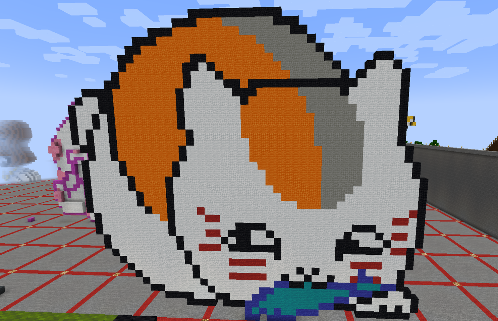
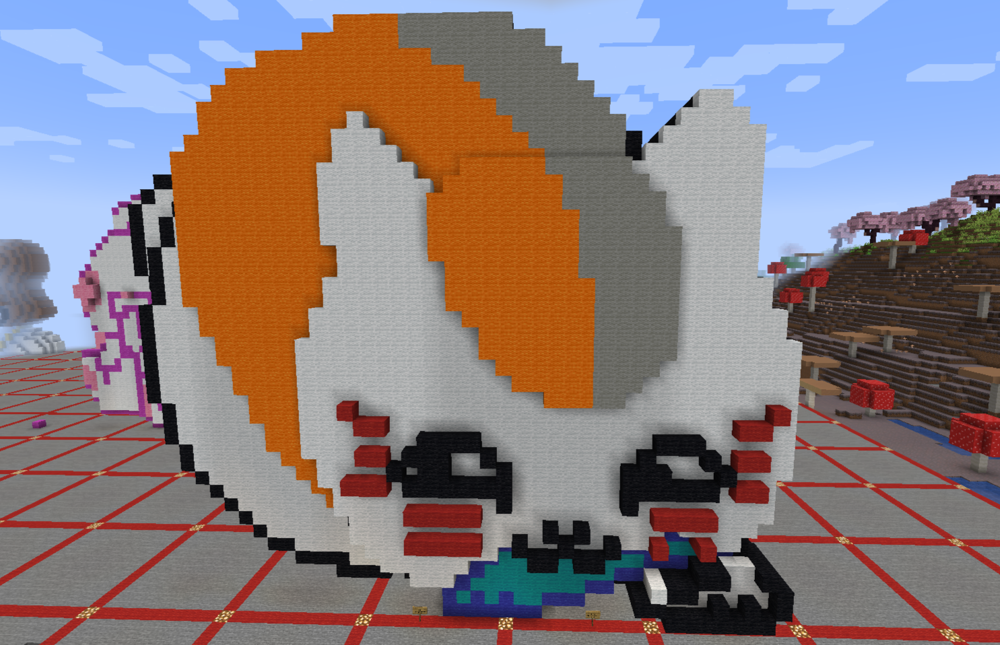

These pieces were the blueprints for the 3D printing. Using blocks in Minecraft, allowed me to create pixel artwork of
the character I wanted and helped me understand how 3D printing would work. I originally created a flat version of my model,
meaning that that there was no depth to it. You will see in the 3D Printed tab that this would result in a failure. Having learned
my mistakes and what I could do to improve my model, I went back into Minecraft and added some more depth to the model.
This would yield a more successful result when printing out.
|  |  |
|---|